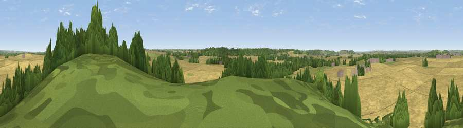

Viewpoint near Bradmore
#34663 in England · top 72% of its area beats it · near BradmoreThe view, rendered

A 360° render of this exact spot computed from the terrain model, tree cover and land cover — summer colours, afternoon light, calibrated against photographs of famous viewpoints. Real trees, hedges and buildings will differ in detail.
The panorama
Grey silhouette: terrain skyline in each direction (720 bearings, Earth curvature and refraction included). Dashed green: skyline with trees (+15 m) and buildings (+8 m) as obstacles. Blue strip: how far the ground is visible on each bearing.
Where the view opens
Wedge length = distance to the farthest visible ground on that bearing (vegetation-aware). Rings at 10, 25 and 50 km.
What fills the view
73% cropland · 13% woodland · 11% grassland · 2% built-up
Angular shares of the visible panorama (visual magnitude), not map area. Landscape diversity 0.36 (0–1 Shannon).
Key numbers
More beautiful places nearby
The staircase of upgrades: each row has a higher view potential than everything closer. Driving times are estimates from straight-line distance, calibrated against real road routing — check an actual route before setting out.
| Place | Direction | Drive | Score |
|---|---|---|---|
| Viewpoint near Bunny | S · 2 km | ~5 min | 46.1 |
| Viewpoint near Bunny | SSW · 3 km | ~7 min | 50.4 |
| Viewpoint near Gotham | W · 7 km | ~14 min | 60.1 |
| Viewpoint near Wartnaby | ESE · 13 km | ~24 min | 61.6 |
| Viewpoint near Strelley | NW · 14 km | ~25 min | 62.6 |
| No Man's Lane | WNW · 15 km | ~27 min | 65.8 |
| Ives Head | SW · 18 km | ~31 min | 73.3 |
| Viewpoint near Woodhouse Eaves | SSW · 18 km | ~31 min | 77.7 |
52.87071, -1.11564 · source: screening · position refined by local search. Computed location — check access rights before visiting.